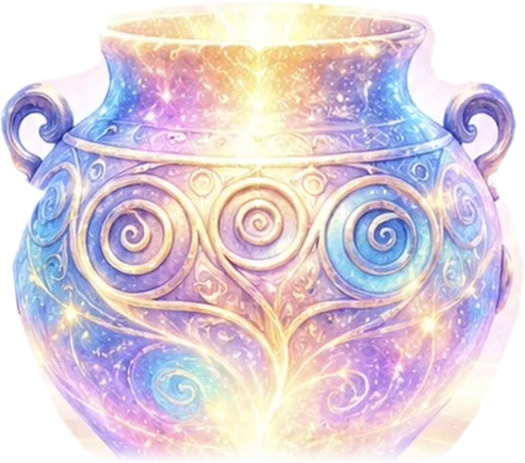

らぴたのルーン占い
Rapita's Rune Reading

古代ゲルマンの人々が神々の声を聴くために使った、世界最古の文字のひとつ「ルーン」。 壺の中で眠る24の文字が、いまのあなたに必要な気づきを運んでくれます✨
ルーン占いについて
ルーンは北欧・ゲルマン世界で使われた文字で、一文字ずつに「豊かさ」「旅立ち」「夜明け」といった意味が宿っています。 袋や壺から引いた文字を読み解くことで、状況の流れや心の奥にある答えを映し出す占術です。
- ᚠ 当たり外れではなく「いまのヒント」として受け取ってね
- ᛉ 逆さに出た文字（逆位置）は、立ち止まりのサイン
- ᛊ 同じ問いは、その日のうちは一度だけがおすすめ
引き方をえらぶ
いまの気分にしっくりくるほうを選んでください。